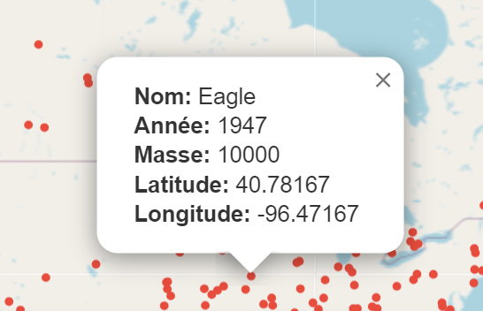

Notre projet de groupe visait à acquérir une expertise pratique dans l'intégration et la manipulation de données d'API sur un front-end. Pour cela, nous avons choisi de nous immerger dans l'API de la NASA en mettant en lumière les données concernant les impacts de météorites. Pour coordonner efficacement nos efforts, nous avons opté pour l'utilisation de Jamboard, un tableau de bord collaboratif, afin de suivre notre progression, partager des idées et allouer les tâches de développement. Guidés par les directives de notre école, nous avons mis en œuvre notre application en utilisant JavaScript comme langage principal, une décision qui a été facilitée par notre familiarité avec ce langage polyvalent.
Grâce à l'intégration de la bibliothèque Leaflet, nous avons pu représenter visuellement les données des impacts de météorites sur une carte du monde, offrant ainsi une expérience interactive et immersive à nos utilisateurs, tout en renforçant nos compétences en développement front-end et en manipulation d'API.
Le projet nous a confrontés à divers défis techniques, notamment la gestion des requêtes asynchrones vers l'API de la NASA pour récupérer les données en temps réel, ainsi que la manipulation et l'affichage des données complexes sur une interface utilisateur conviviale.
En naviguant à travers ces défis, nous avons acquis une compréhension plus approfondie des concepts clés de développement web, tels que la gestion des états, la manipulation du DOM et l'intégration de bibliothèques tierces. Notre collaboration étroite et notre engagement à surmonter les obstacles nous ont permis de développer non seulement nos compétences techniques, mais aussi nos capacités de résolution de problèmes et notre aptitude à travailler efficacement en équipe. En fin de compte, ce projet nous a non seulement permis de créer une application fonctionnelle et utile, mais aussi de consolider notre passion pour le développement logiciel et notre désir d'explorer de nouvelles technologies et méthodologies de travail.
Données affichées
Notre projet a été conçu de manière à ce que :
- Lorsqu'un utilisateur clique sur un point rouge représentant un impact de météorite sur la carte, des données détaillées relatives à cet événement s'affichent instantanément.
Ces données comprennent :
- Le nom de la météorite.
- L'année de son impact.
- Sa masse.
- Sa latitude et sa longitude exactes.
Cette fonctionnalité interactive permet aux utilisateurs :
- D'explorer les différents impacts de météorites à travers le monde.
- D'accéder à des informations précises sur chaque événement.
- D'enrichir leur expérience utilisateur.
- D'approfondir leur compréhension de ces phénomènes célestes fascinants.

Code disponible sur Github avec un ReadMe explicatif
Code du projet sur Github